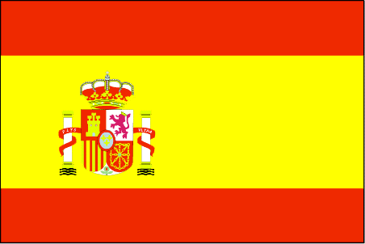
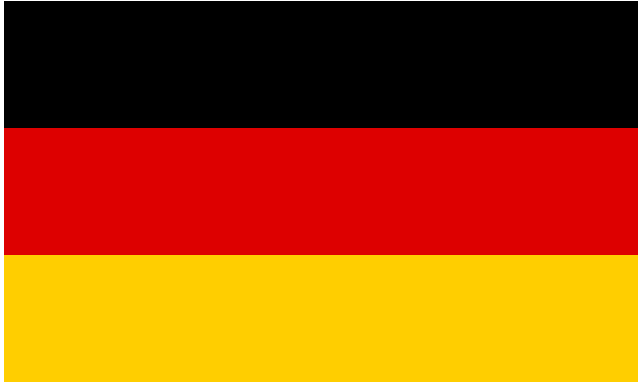

United Kingdom

The United Kingdom, made up of England, Scotland, Wales and Northern Ireland, is an island nation in northwestern Europe. England – birthplace of Shakespeare and The Beatles – is home to the capital, London, a globally influential centre of finance and culture. England is also site of Neolithic Stonehenge, Bath’s Roman spa and centuries-old universities at Oxford and Cambridge.
Spain
Spain, a country on Europe’s Iberian Peninsula, includes 17 autonomous regions with diverse geography and cultures. Capital city Madrid is home to the Royal Palace and Prado museum, housing works by European masters. Segovia has a medieval castle (the Alcázar) and an intact Roman aqueduct. Catalonia’s capital, Barcelona, is defined by Antoni Gaudí’s whimsical modernist landmarks like the Sagrada Família church.
Germany
Germany is a Western European country with a landscape of forests, rivers, mountain ranges and North Sea beaches. It has over 2 millennia of history. Berlin, its capital, is home to art and nightlife scenes, the Brandenburg Gate and many sites relating to WWII. Munich is known for its Oktoberfest and beer halls, including the 16th-century Hofbräuhaus. Frankfurt, with its skyscrapers, houses the European Central Bank.